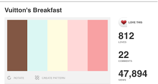

Creative Multimedia Programming
Interaction Interface Design
Sunday, 26 February 2017
Issuu Link: Portfolio Uploaded
With the help of both http://www.pdfmerge.com and http://combinepdf.com, I was finally able to tackle my viewing problems. By margining my pdf into sections using pdfmerge and then combining them altogether using combine pdf, I was finally able to upload my portfolio to Issuu.
Issuu
Monday, 30 January 2017
Portfolio Design
After completion of my CV, I have began to plan out my portfolio. Before I began to add content I decided on my colour scheme and font. I have decided to keep the theme of my CV and incorporate it into my portfolio. The colour scheme I have chosen is:

I will primarily use the two pink colours for my portfolio.
The next decision I made is the font for my portfolio. Again, I have to decided to keep my cv design consistent with my portfolio and have decided to use the font Delihi previously used within my Curriculum Vitae. I have downloaded this font from dafont.com and have installed into both Adobe Illustrator and Adobe Photoshop.
My next step was to decide on what content I will include in my portfolio. I will include a table of contents, my cv and my projects. I have decided to include projects I have completed last semester and projects I have completed from my previous course over the last four years.
Upon research of various portfolios, many people add a mood-board to describe themselves within their portfolio. Im still making a decision to add a mood-board to my portfolio to add a sense of personalisation and portray my personality to potential employers.
As I have decided on my overall colour scheme, font, and potential content I will begin to design my portfolio using the Adobe suite.
Saturday, 21 January 2017
Assignment 1: The next step!- Development of my CV
After careful research of various portfolios and CV's, my step was to develop my own excellent designed CV. To do this, I used various examples I have researched to customise to my own preference.
Before I began, I decided on a colour scheme that I plan to use in relation to my cv and portfolio. I then decided on what fonts I would like to use and finally I decided on my skills and information I need to display on my CV.
Colours
The colour scheme I have chosen is a palette that contains, pinks, blue's, yellows and browns. I found this palette from colourlovers.com
The colour scheme I have chosen is a palette that contains, pinks, blue's, yellows and browns. I found this palette from colourlovers.com
Why Pink?
Overall, I plan to use the two shades of pink primarily for my cv and incorporate the various other colours into my portfolio. Pink is a combination of the colours red and white. Pink contains the need for action of red, helping to achieve potential success. With this CV I hope to successfully secure a job within the sector of Information Technology.
Overall, I plan to use the two shades of pink primarily for my cv and incorporate the various other colours into my portfolio. Pink is a combination of the colours red and white. Pink contains the need for action of red, helping to achieve potential success. With this CV I hope to successfully secure a job within the sector of Information Technology.
Fonts
The next decision was the fonts I would use on my CV. I decided on two fonts. These fonts are Delhi regular and Segoe UI Light.
The next decision was the fonts I would use on my CV. I decided on two fonts. These fonts are Delhi regular and Segoe UI Light.